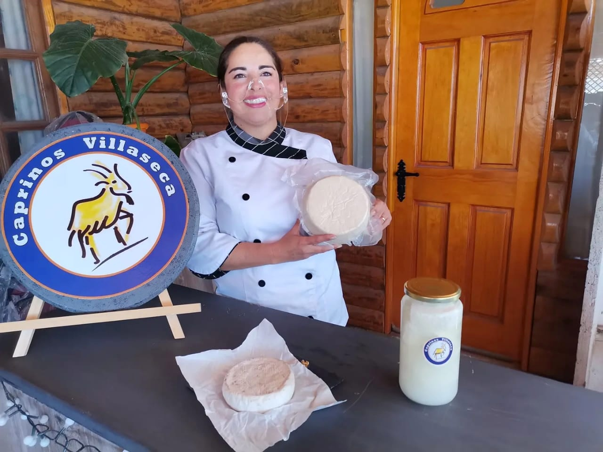

Los productores pertenecen al Programa Transforma Caprino de Corfo y provienen de comunas como Monte Patria, Canela, Combarbalá, entre otras comunas.

Las redes sociales se han transformado en un entorno con gran potencial para comercializar productos y servicios, otorgando a las empresas herramientas de segmentación, promoción y generación de contenido. Es por esto que el programa ha ofrecido sistemáticamente cursos de formación relacionados a las plataformas digitales, con el objetivo de acercar las redes sociales a los productores. Los talleres se han llevado a cabo de forma virtual y han sido impartidos por la periodista, Javiera Manghi. En ellos, se han abordado tareas como crear las cuentas comerciales de los participantes, optimizar sus perfiles con la información necesaria, dar lineamientos de contenido, entre otras cosas.
Brisa Godoy, fundadora del restaurante Delicias de El Tebal, indicó que «para nosotros es tremendamente útil adquirir estas herramientas, ya que muchas veces estas estas plataformas no son tan familiares para nosotros, entonces poder trabajar con alguien que te explique con calma y paciencia cada una de ellas es muy valioso. La pandemia nos puso la digitalización de frente y hemos debido adaptarnos rápidamente, por lo que estos talleres son de gran utilidad para poder responder a los usuarios digitales».
Cecilia Pastén, fundadora de la quesería Altos del Tome, señaló que «yo tengo 57 años y me ha costado mucho entrar en este mundo. Uno siempre tiene temor a borrar o echar a perder algo, los jóvenes en cambio son más valientes y exploran sin problemas. Además, aquí la conectividad no es muy buena, entonces tenemos muchas limitaciones, pero con estos talleres a uno se le vuelven temas más familiares y uno va perdiendo el miedo».
Justamente, son las brechas existentes las que han retrasado la apertura de estas tecnologías a los productores, quienes se enfrentan diariamente con dificultadores de cobertura de las señales de internet y/o telefónicas, por las zonas rurales en las que viven.
En este sentido, Javiera Manghi, periodista y encargada del taller, señaló que «es necesario entender que estas herramientas no son familiares para todo el mundo, ya que existen brechas etarias, geográficas y de acceso a la tecnología que lo dificultan. Por eso es necesario abrir estos espacios donde no solo importa el contenido, sino que la paciencia, la flexibilidad y la empatía a la hora de enseñar. Ellos están abiertos y emocionados por aprender y con eso ya tenemos el 80% avanzado».
En cuanto a la proyección de estos talleres, los cuales no han superado los cuatro participantes por sesión, para poder asegurar un trabajo personalizado y que respete los tiempos de cada uno, se pretende incorporar otras temáticas como la creación de perfiles en Google My Business y WhatsApp Business
Los talleres, que no han superado los cuatro participantes por sesión, están pensados para asegurar un trabajo personalizado y que respete los tiempos de cada uno. Además, cuando se termine de abordar los temas iniciales, se pretende incorporar otras temáticas, como la creación de perfiles en Google My Business, WhatsApp Business y campañas de pago, con el fin de ir haciendo cada vez más eficiente sus estrategias digitales.
Ingrid Haselbauer, médico veterinaria y gerente del programa, indicó que «nuestros productores han recibido muy bien este taller, ya que entienden el valor de entrar a las plataformas digitales para comercializar sus productos. Actualmente, los usuarios están comprando a través de Internet y es por eso que nuestros capricultores no pueden quedar fuera, ya que elaboran un producto de gran calidad, de alto valor agregado, con una fuerte demanda y que representa una parte de la identidad gastronómica y cultural de la Región de Coquimbo».
Rodrigo Gutiérrez, coordinador regional del Programa de Zonas Rezagadas, señaló que «el Programa Transforma Caprino viene justamente a contribuir con formaciones y capacitaciones de alto nivel a nuestros productores, de manera de disminuir las brechas que existen en términos de conectividad, conocimientos o comercialización, y sobre todo en las comunas que hoy estamos abordando. La valoración nuestra y de los mismos productores es muy buena con respecto a estas instancias de entregas de conocimiento y creemos que este debe ser el motor que impulse esta actividad ancestral».
Transforma Caprino es un programa de Corfo, financiado por el Gobierno Regional, a través del Programa Gestión Territorial de Zonas Rezagadas, que busca impulsar la cadena de valor del rubro caprino. Actualmente, está focalizado en las comunas de Punitaqui, Monte Patria, Combarbalá, Canela, entre otras. Para más información, es posible visitar sus redes sociales, en Facebook, Instagram y Twitter.